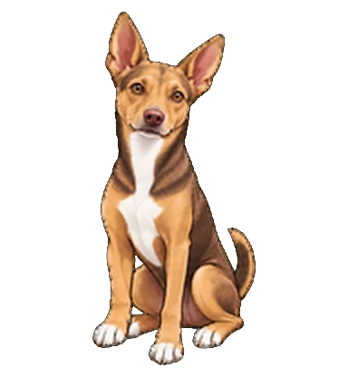

WhisperWoof: voice dictation for Mac that types as you speak

WhisperWoof listens on your Mac and types while you speak — Chinese, English, or both in one sentence. Let go of the key and it tidies the words up and pastes them where your cursor is.
Free and open source. Nothing you say leaves your computer.
See it as you say it, or all at once
Pick how dictation behaves in Settings. Both run on your Mac; the difference is when the words show up.
Live typing
Words appear while you talk, like a phone keyboard's voice input. Words in glass may still change as it hears more.
When you let go, the whole recording is checked again, cleaned up and pasted.
After you finish
Mando shows a waveform while you speak, then transcribes everything in one pass. The lightest on your Mac.
Best when you dictate long passages and only need the final text.
Speak the way you actually talk
Switch languages mid-sentence, trail off, correct yourself. The cleanup keeps your words and your language, drops the filler, and adds the punctuation.
The key you press decides where it goes
No commands to remember and no guessing: each combination has one destination.
Hold to talk, let go to paste
Text lands at your cursor in whatever app you're in. Double-tap fn to keep recording hands-free, then tap once to finish.
Copy instead of paste
For when you want to put the text somewhere yourself.
Save a note
Thoughts go straight into a Markdown file, dated and searchable.
File it under a project
Keep voice notes grouped with the work they belong to.
Everything happens on your Mac
WhisperWoof ships its own speech and language models and runs them on your laptop. No account, no upload, no subscription. Cloud models are there if you bring your own key — off unless you turn them on.

Give Mando your voice
Free and open source, built for Apple Silicon Macs.
Needs macOS on Apple Silicon, a microphone, and about 3 GB for the models.
Quickest install: paste curl -fsSL https://raw.githubusercontent.com/h3qing/WhisperWoof/main/scripts/install.sh | bash into Terminal. Using the .dmg instead? The app isn't signed by Apple yet: the first time you open it, click Done, then choose Open Anyway in System Settings → Privacy & Security.